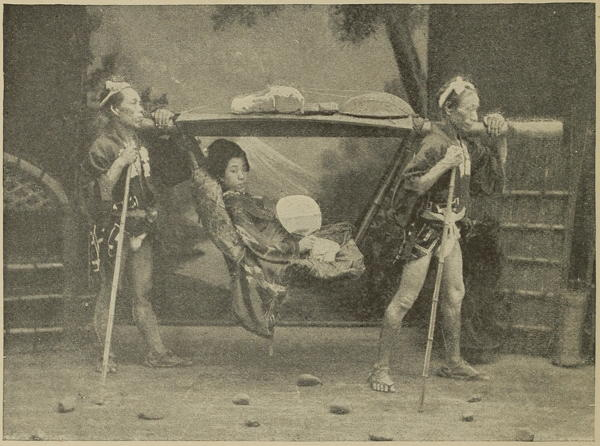
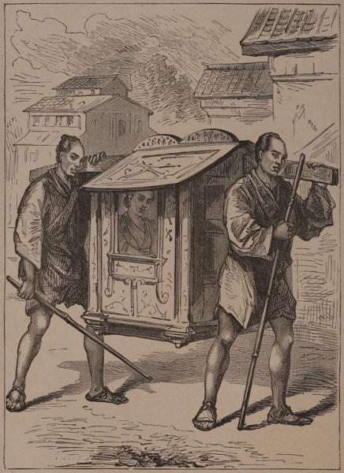

“Human ponies”
Japan (1897)

“Norimon”
Japan: Historical and Descriptive (1877)
Our kagos are of two kinds, the one being closed like a dwarf sedan-chair, with the bottom serving as the seat, and sliding doors at the sides; the other, known as yama-kago, or mountain-kago, being a mere suspended open framework of bamboo to rest on, with a light screen over it. In both cases they are suspended from a pole running lengthwise, and the bearers carry folded handkerchiefs as a shoulder-pad, and a bamboo stick to rest the pole on when they “change shoulders,” which they do after very short intervals. The largest kago of each kind that could be obtained in Mishima was placed at my disposal, and I tried both before starting, and found, as I thought, that either would do; but we all started from Mishima on foot, and when, after a long and tiring climb, I forced myself into them and attempted to travel in them, I found that neither was endurable for more than a few minutes, especially as the bearers changed shoulders frequently, and kept me so incessantly gyrating through large angles that they gave me a sort of longitudinal swimming in the head, to which a reasonable regard for the readers of this book would not allow me to submit myself for more than a very few hundred yards. I was obliged, therefore, to make my own way on foot to Hakoné, and a toilsome way I found it. At Hakoné, after luncheon, a much larger yama-kago was obtained, and adapted for four bearers, so that the remainder of the day’s journey to Yumoto was relieved as much as I found necessary. Speaking generally, these kagos are a detestable means of conveyance to all but Japanese, owing to the cramped position which you are required to assume in them. They appear to be comfortable enough, indeed very comfortable, to the natives of the country, because they are habituated from infancy to sit upon their feet, or upon the floor with their feet turned under. But for those of us (Europeans, Americans, and others) who are accustomed all our days to sit on chairs, it is very difficult to assume at all the position necessary for kago-sitting or kago-lying, and almost impossible to preserve it long.
Japan: Its History, Traditions, and Religions (1880)
I have travelled in a good many fashions, on elephants, camels, yaks, in Spanish diligences, and Indian bullock-carts, but never in such a truly uncomfortable conveyance as the ‘kango;’ a bread-platter eighteen inches in diameter, slung on to a pole and roofed over with light laths, just too low to sit upright in, so one is bound to have a ‘crick’ in the neck, a pain in the back, and a bad fit of ‘knots in the knees’ (as the American young lady said), from crumpling up one’s legs to fit on the bread-platter. However, it is wonderful with what apparent ease two Japanese coolies, having divested themselves of all superfluous clothing, and had two whiffs from the pipe they carry stowed away over my head, take up the ‘kango’ and walk over the Pass.
Journal of a Lady’s Travels Round the World (1883)
The first part of our return journey to Sumiyoshi was very wet, but near the summit of Rokko San we met a man, who had been sent by the thoughtful owner of the kagos with oiled paper curtains to hang over us. They kept us splendidly dry, and the rain stopped some time before we reached the station. The kago men did not seem at all tired—in fact, Mrs. Bickersteth’s bearers were still so fresh after the seven hours’ journey, that they took to running with her for the last mile or two. It is all very well for jinriksha men to run, and over a smooth road the motion is very pleasant, but in kagos the result, on the contrary, is swinging and jolting of a horrible description! My brother was too far behind to notice their sudden move, and though Mrs. Bickersteth and her coolies passed me and my more sober-minded retinue, the astonishment of seeing her rushed along in this fashion took away all my small stock of Japanese. I fear my evident amusement only added to the speed of her journey, and the men continued their gallop until they arrived at the station-door.
There my brother made them humbly apologise, and they came just like children to do so, putting their hands together and begging mutely for pardon.
Japan As We Saw It (Bickersteth) (1893)
On the morning after our arrival, we found ourselves confronted by the most novel style of conveyance we had thus far seen. “What under heaven is this?” I cried, as I caught sight of it. “Must I get into this thing, and haven’t you any blankets for these horses?”
My friend sat down upon a rock and vowed he would not go. “Give me a jinrikisha,” he moaned; “I’d rather be once more a baby-jumper in my little carriage than a mere stone in a sling, as you will be in that!” He finally compromised on an armchair, hung on bamboo poles and carried by four men; but I resolved to give this vehicle a thorough trial. So crawling in, like a dog into its basket, I crossed my legs after the fashion of a Turk who had fallen over backward, and told my well-groomed steeds to go ahead. The unique and novel instrument of torture to which I thus subjected myself is called a “kago.” It is a shallow basket, suspended from a bamboo pole, on which it swings irregularly like an erratic pendulum. Two men take this upon their shoulders, while a third follows as a substitute; for they change places usually every fifteen minutes. Mine changed every five. The man who invented the iron cage, within which the unhappy prisoner could neither stand up nor lie down, must have heard of a Japanese kago. The basket is too near the pole to let the occupant sit erect, and much too short for him to extend his feet without giving the bearer in front a violent prod in the small of the back. After many frantic experiments, I found that the easiest fashion of kago-riding was to lie upon my side, my head lolling about in one direction, and my feet in the other. Even then, the lower half of my body kept falling asleep, and I was frequently obliged to get out and walk, to avoid curvature of the spine. Yet, incredible though it seems, Japanese women often travel by these kagos. They certainly looked a thousand times more comfortable than I felt; but then, the Japanese are short, and, moreover, are used to bending up their limbs like knife-blades when they seat themselves.
On a broad road, one experiences no sense of danger in these swinging cars; but, once in a while, when I was being carried thus along a path two feet in width,—a mountain grazing my right elbow, and a ravine one thousand feet in depth just under my left shoulder-blade, I used to wonder just what would happen if one of these men should stumble; or if, becoming weary of their load, they should suddenly shoot me outward into space like a stone from a catapult, I prudently kept on good terms with my kago-men, and never refused them when they asked the privilege of halting to take a smoke.
Japan (1897)
◀ Water transportationJinrikisha ▶